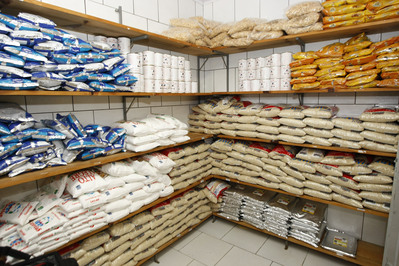

Estoque de comida
Não ter um estoque de comida e água pode tornar até um desastre de pequenas proporções (como uma tempestade ou falta de energia) em uma situação potencialmente ameaçadora à vida. Ter comida guardada pode te ajudar a controlar a situação no conforto e proteção de sua casa.
Em uma situação de desastre (dependendo de sua natureza) haverão momentos onde será impossível obter comida. Isso pode acontecer por inúmeras razões como doenças, clima adverso ou a necessidade de se esconder por um tempo. Ter um estoque de comida nesse tipo de situação pode assegurar sua sobrevivência nos momentos mais baixos.

O estoque
Para melhor conservação do seu alimento, é preferivel um cômodo feito de cimento ou algum material que não deixe entrar humidade e seja isolante térmico.

As prateleiras
Para construir uma prateleira você vai precisar de:
1 folha de lixa número 80;
1 folha de lixa número 100;
1 folha de lixa 180;
1 par de luvas;
1 lata pequena de massa para madeira;
1 lata pequena de fundo para madeira;
1 rolo de espuma de 9 cm;
1 espátula plástica.
1 par de mãos francesas (para cada prateleira);
parafusos e buchas tamanho 8
1 furadeira.

Construção
Comece lixando a madeira com a lixa 80. Retire o pó e lixe novamente com a lixa 100. Limpe-a e aplique uma camada do fundo para madeira. Dessa forma, ela ganhará aderência. Observe se a madeira tem defeitos em sua superfície. Caso os encontre, preencha-os com a massa para madeira, usando a espátula e aguarde por duas horas.
Lixe a madeira de forma delicada, usando a lixa 180. Interrompa o processo quando a superfície estiver lisa. Limpe a superfície com um pano seco e faça o acabamento da maneira que desejar. Você pode deixar a madeira em sua cor original ou pintar da cor que preferir. Para pintar madeira, use tinta esmalte.

Coloque a tábua na vertical e parafuse a mão francesa na tábua. Coloque a prateleira na parede, meça com um nível, para garantir que ela não será colocada de maneira torta, e marque, com um lápis, a posição em que serão colocados os parafusos.
Usando uma furadeira, faça os furos. Nesse exemplo, estamos usando parafusos tamanho 8. Então, primeiro fure com uma broca tamanho quatro, em seguida, aumente o furo com uma broca tamanho oito. Coloque a bucha e parafuse.
Observações
Vale lembrar que você precisa escolher muito bem o local no qual você vai colocar a sua prateleira, visto que isso também influenciará alguns pontos na construção, no tamanho e no formato da prateleira. Enquanto uma área de convivência demanda um espaço de armazenamento mais amplo, cômodos menores exigem medidas mais discretas.
Você pode guardar alimentos perecíveis em uma conserva dependendo da qualidade do ambiente do estoque.

Se objetos muito pesados forem colocados na prateleira, será necessário usar um tamanho maior de parafusos e mais suportes. Se a sua ideia for a de colocar apenas artigos de decoração mais leves, não será preciso reforçar muito a estrutura. Lembre-se apenas de considerar também o próprio peso do material, sobretudo da madeira.
Classificação
A classificação dos itens é composta de diversas etapas:
Catalogação – Significa o arrolamento de todos os
itens existentes de modo a não omitir nenhum deles.
Especificação – Significa a descrição detalhada de
um item, como suas medidas, formato, tamanho,
peso, etc. Quanto mais detalhada a especificação de
um item, menos dúvida se terá a respeito de sua
composição e características, mais fácil será a sua
compra e inspeção no recebimento.
Significa estabelecer idênticos
padrões de peso, medidas e formatos para os alimentos, de modo que não existam muitas variações
entre eles. Por exemplo, a padronização evita que
centenas de parafusos diferentes entrem em estoque.

Especificações
O local de armazenagem deve ser fresco, ventilado e
iluminado.
As áreas de armazenagem devem ser mantidas limpas, livres
de resíduos e sujeiras para evitar a presença e aninhamento de
insetos e roedores.
As áreas de armazenagem devem permanecer livres de ratos,
morcegos e pássaros e devem ser periodicamente higienizadas
e desinfetadas com produtos apropriados.
Deve existir área própria e isolada do estoque principal para
os produtos recolhidos ou destinados a inutilização.
Os ralos internos devem ser evitados. Se necessários, devem
ser sifonados e tampados para não permitir a entrada de
pragas e para evitar maus odores.
O teto deve ser isento de vazamentos e goteiras; deve ser
evitada a utilização de telhas que permitam a ocorrência de
respingos.
O piso deve estar em nível elevado em relação a rua para
permitir o escoamento da água.
Os pisos deverão ser construídos sem inclinação para permitir
a construção de pilhas altas sem o risco de tombamento.
O piso deverá ser construído com material resistente à
abrasão, podendo ser do tipo monolítico.
O piso e as paredes devem ser mantidos secos e sem
infiltrações.
Todas as lâmpadas devem possuir proteção plástica para que
em possíveis estouros, não caiam pedaços de vidro sobre o
alimento, além da possibilidade de causar ferimentos nos
funcionários
Devem ser evitadas fiações elétricas expostas e vidros
quebrados.
As pias e banheiros devem ser separados das áreas de
estocagem de alimentos.
Entre tetos e paredes não devem existir aberturas, para evitar
a entrada de pragas, tampouco bordas que facilitem a
formação de ninhos.
As janelas devem ser providas de telas removíveis para
facilitar a sua limpeza e higienização e evitar a entrada de
insetos, roedores, pássaros e morcegos.
As telas devem estar fixadas pela parte interna da construção.
A malha das telas devem ser de 1,0 mm.
Clarabóias ou outros materiais de vidro devem ser de tipo que
garantam a segurança evitando a contaminação dos alimentos
em caso de quebra.
As portas e acessos devem ser mantidos fechados e com
abertura máxima de 1,0cm do piso. Se necessário, instalar
cortinas de ar ou cortinas plásticas.
A temperatura de armazenamento das matérias-primas, deve
ser compatível com a recomendação do fabricante.